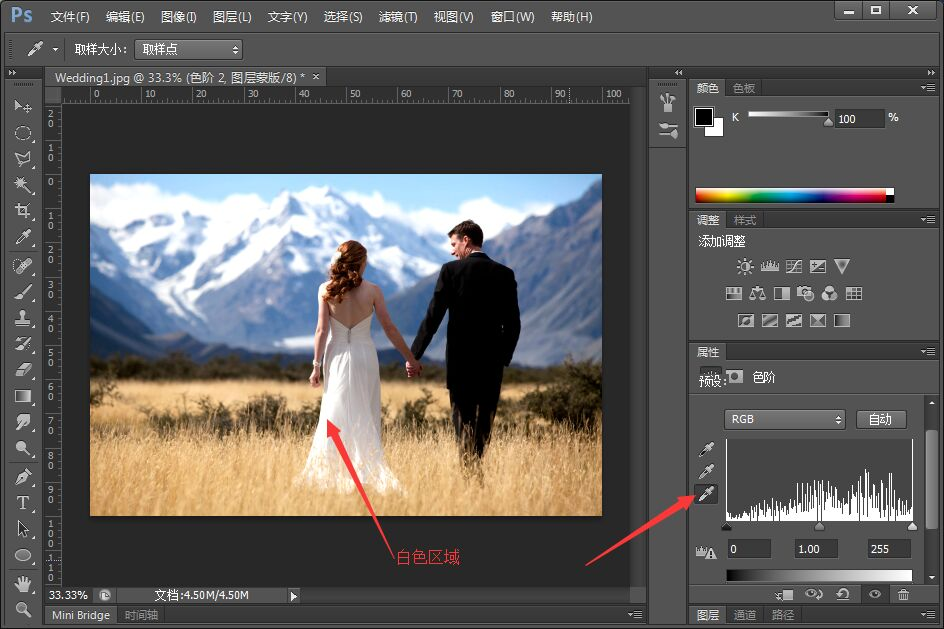

今天我们就来学习下如何做一下照片的后期，常常我们拍出的照片是不是觉得白色都不是白色了呢，这就是偏色啦。那该如何解决呢，现在小编有个小技巧，快跟我一起实现它吧。

今天我们就来学习下如何做一下照片的后期，常常我们拍出的照片是不是觉得白色都不是白色了呢，这就是偏色啦。那该如何解决呢，现在小编有个小技巧，快跟我一起实现它吧。
打开照片进Photoshop，然后找到色阶这个按钮。
找到白色的吸管工具，找中到图片你认为是白色的地方，点击。
是不是很简单呢（不是），快来试试吧。